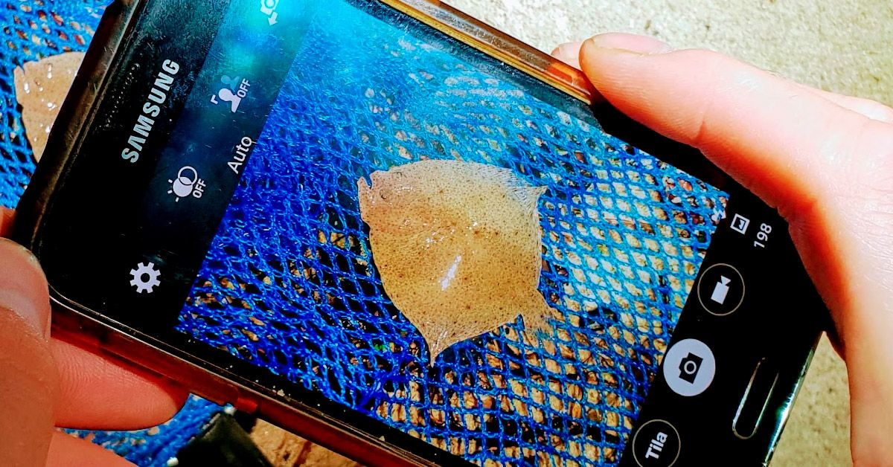

Kalalajit · Kampelat Piikkikampela Näin pyydätPyyntitavatLirkkiKoukkukoko20 → mitä tämä tarkoittaa?SyöttiPinkiePiikkikampela on yksi monista lirkkilajeistaPiikkikampelat Timin ja Mikon käsissä. Muut kampelatKampelaLähde: Lajikalastus: Koukkujen koko ja syötit. ← EdellinenPasuriSeuraava →Piikkimonni